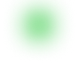
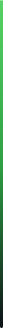

Welcome to my page, I'm Oluwaseun a graduate from SAIL INNOVATION LAB i'm still learning And I'm a Software Engineer |Web developer | Designer | Creative Thinker
and i know in 6months time i will be one of the best Software Engineer graduate SAIL as ever seen i love problem solving i love challenging myself.


About Me
Hello, I'm Arabambi Oluwaseun, a passionate software developer dedicated to crafting elegant solutions in the digital realm.
Currently immersed in a dynamic journey at Sail Innovation Lab,
I'm harnessing the power of HTML, CSS, JavaScript, and TypeScript to bring ideas to life and shape the future of technology
With a relentless drive to learn and expand my skill set, I thrive on the challenges that software development presents.
Beyond mastering the fundamentals, I am committed to exploring emerging technologies and refining my craft to deliver exceptional experiences. As I embark on this exhilarating path, I aspire to collaborate with like-minded individuals, push boundaries, and leave a meaningful impact on the world through innovative software solutions.
Let's build something extraordinary together..